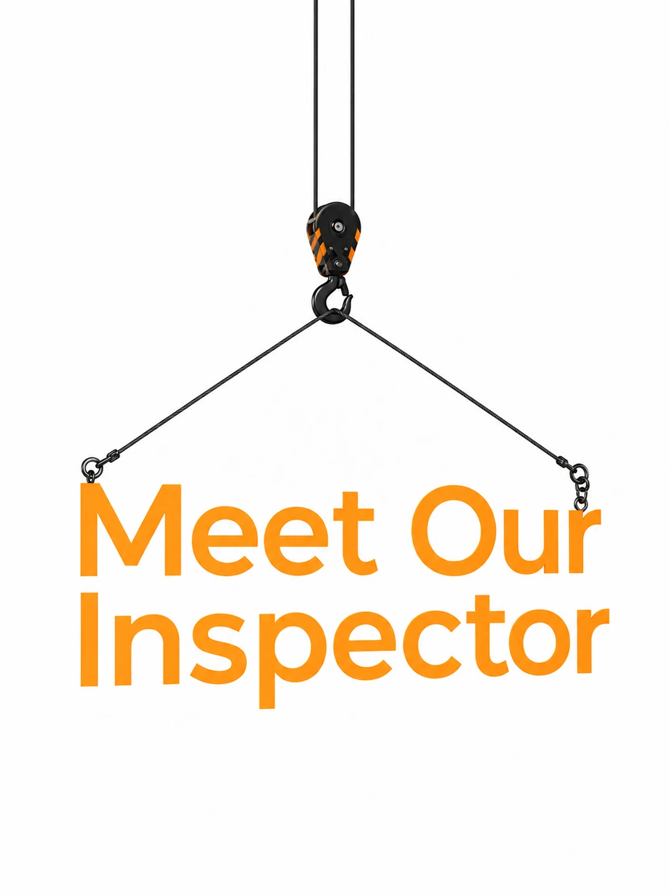
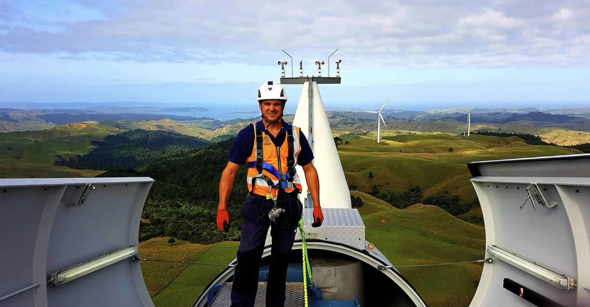

Crane, Lifting Equipment& Welding Inspections& Certification.
Reliable statutory and non-statutory inspections by a trusted Auckland-based CBIP certified inspector.
Client testimonials.
What we inspect.
Swipe to explore, tap any service for the full scope.
Understanding certification.
Practical guidance on crane certification, inspections, recognised equipment and safe operation in New Zealand.

With over a decade of experience, Barend Botha is a trusted equipment inspector.
CBIP Crane Inspector
Categories A & C
CBIP Welding Inspector
Structural & compliance welding inspections
CBIP EWP Inspector
Serving Auckland and the wider region
Our Service Locations.
Crane certification and inspection services across Auckland and the wider region.
Direct access to the people handling your inspection and administration.

Book your inspection.
For a free, no-obligation quote, enquire now.
- Tell us what needs inspecting and where it's working.
- We confirm the scope and send your free, no-obligation quote.
- Barend inspects on site and provides clear reporting and certification.
Thanks, your enquiry is in.
We'll be in touch shortly about your inspection. If it's urgent, call +64 22 534 1090.
Preview build: no email service is connected yet, so this enquiry was not sent anywhere. (Set FORM_CONFIG in main.js.)